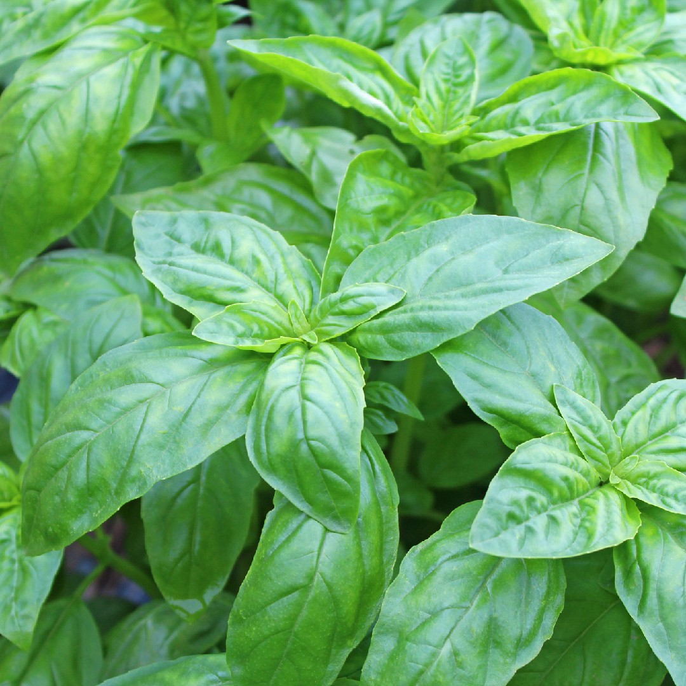

Basilico: uso tradizionale, proprietà e avvertenze
Ocimum basilicum

Considerato sacro in Grecia e a Roma, è una delle erbe aromatiche più usate in cucina.
Proprietà attribuite dalla tradizione
- Ricco di flavonoidi e vitamine, oggetto di studi di laboratorio per l'attività antiossidante
- Tradizionalmente attribuito a un'azione lenitiva e antinfiammatoria
- Il linalolo è oggetto di studi per gli effetti calmanti
Uso tradizionale
Tradizionalmente si usa in tisane e oli; le foglie pestate con olio d'oliva si applicavano su punture di insetto.
Avvertenze e controindicazioni
L'uso alimentare è considerato sicuro. Olio essenziale e integratori sono sconsigliati in gravidanza. Attenzione con anticoagulanti per il contenuto di vitamina K.
Avvertenza. Le informazioni di questa pagina hanno scopo divulgativo e non sostituiscono il parere del medico o di un professionista sanitario. Non usare le erbe per curare o sostituire una terapia. In gravidanza, allattamento, in presenza di patologie o di farmaci in corso, consulta il medico prima dell'uso.
Dove acquistare
Link a prodotti di un partner (programma di affiliazione):
Le proprietà sono riportate come attribuzioni tradizionali o come oggetto di studi, senza valore di cura.